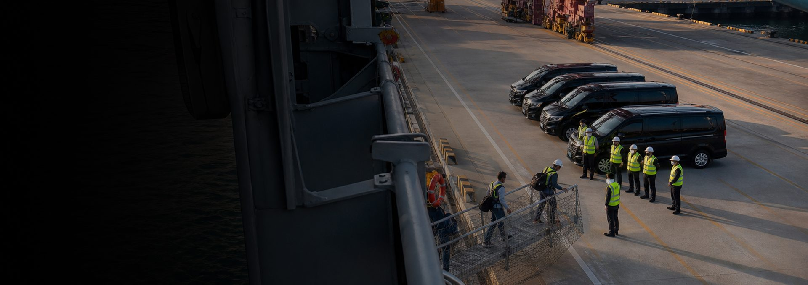
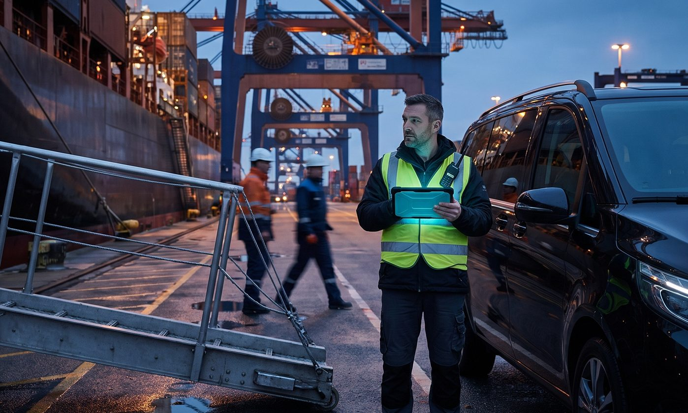
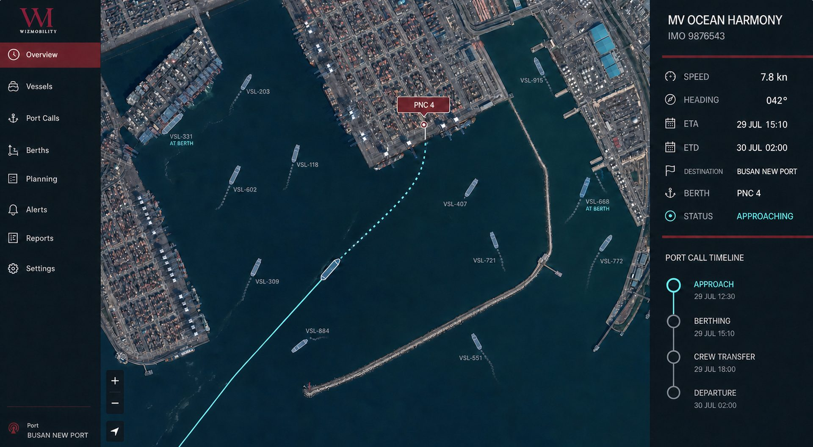
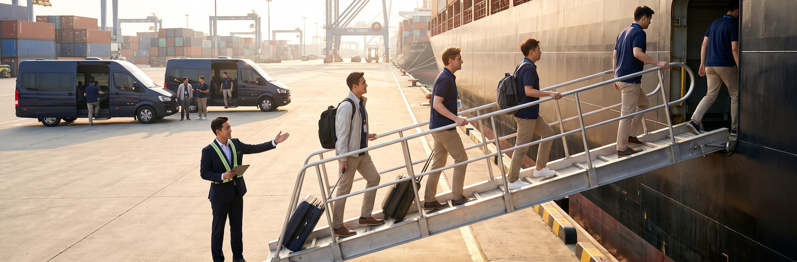
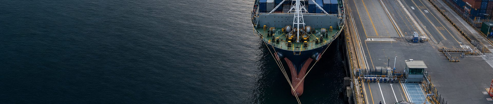

선박 일정 중심
ETA·ETD와 접안 진행상황을 기준으로 선원 교대 일정과 현장 이동을 조정합니다.

선박 입항시간이 바뀌면 항공편, 숙박, 항만 인계와 차량 일정도 함께 달라집니다 위즈모빌리티는 분리된 이동을 하나의 운영 흐름으로 연결합니다.
ETA·ETD와 접안 진행상황을 기준으로 선원 교대 일정과 현장 이동을 조정합니다.
항공편과 목적지에 따라 선원 그룹을 구성하고 필요한 차량과 경로를 연결합니다.

공항 픽업부터 항만 인계까지 주요 단계와 변경사항을 담당자가 함께 확인합니다.
선박 입항 건을 기준으로 관련 업무를 묶어 관리합니다. 선박과 선원,
항공과 숙박 일정, 차량 배차가 각각 따로 관리되지 않습니다.

각 단계의 예정시간과 실제 진행상태를 확인하여 다음 이동과 현장 인계를 준비합니다.
입국한 선원이 본선에 안전하게 인계될 때까지
도착시간과 선원 그룹 확인
기사·차량 배정 및 현장 미팅
선박 일정에 맞춘 중간 일정 수행
출입 확인 후 승선 완료 기록

선박에서 인수한 선원이 출국할 때까지
실제 접안시간과 하선 승인 확인
인수장소와 CIQ 진행상태 확인
항공편에 맞춘 대기 및 이동
인계와 업무 완료 결과 기록
현재 운영중인 상황에 맞추어 통합 관리를
구현할 수 있도록 함께 고민하겠습니다.
선박, IMO, 항만, 부두, ETA·ETD와 입항·대기·접안 상태
선원 그룹, 인원, 국적, 항공편 수하물과 이동 조건
입출국 일정과 호텔, 병원, 대기 장소를 포함한 다구간 여정
차량, 기사, 협력사, 픽업·경유·하차와 실시간 진행상태
출입구역, 담당자, 인수·인계와 일정 변경·지연 사유
업무 완료 근거와 변경이력, 운행내역 및 비용자료 연결
선원 교대 관리 화면에서 전체 업무를 확인하고, T‑RiseUp의 예약·배차·관제 기능으로 실제 차량과 현장 운영을 수행하는 구조입니다.
선박명·항만·ETA·ETD·접안상태
예약, 복수 차량 배차, 기사·협력사, 위치와 수행결과
담당 선박과 선원 교대의 최신 상태 및 변경내용 확인
